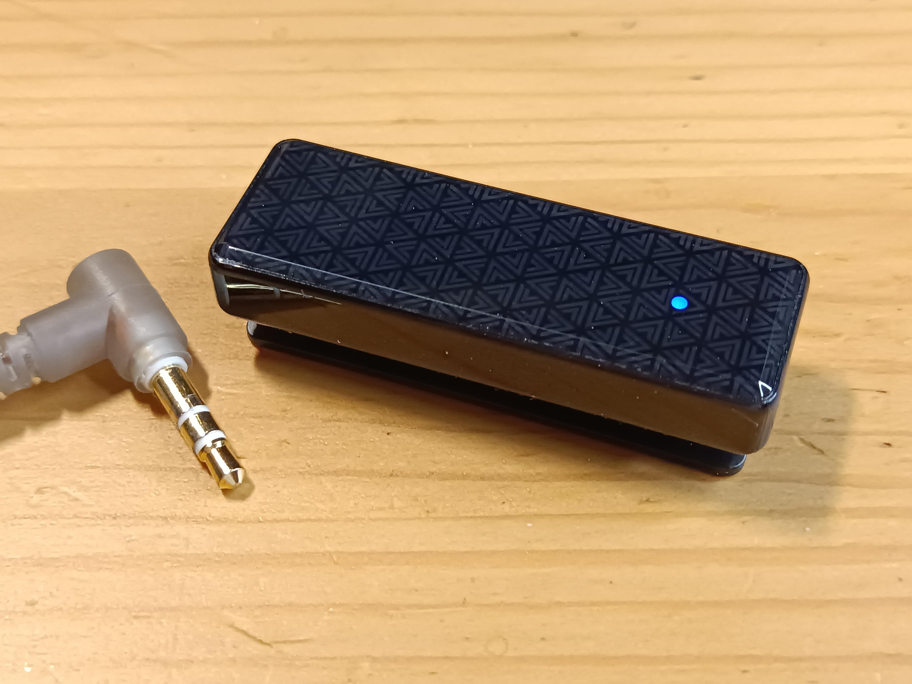

Bluetooth-свисток FiiO BTR11

Иногда мы с женой смотрим по вечерам кино. Слушать аудио без наушников мы не очень любим, ведь уровень громкости в современном кино постоянно плавает. Думаю, многие с этим сталкивались, когда нужно снижать и увеличивать громкость пультом от сцены к сцене. Один из простых выходов – надевать наушники.
Но экономика масштаба – вредная тётка. На современных телевизорах часто нет встроенного ЦАП с выходом на 3.5мм Jack. Это мой случай, есть только варианты выводить звук по Bluetooth и оптике. Подключить несколько Bluetooth-наушников на этом ТВ нельзя, поэтому быстро перешёл к варианту с оптикой.
Несколько лет назад купил типовой ЦАП со встроенным усилителем за 750 рублей, подключил к телевизору по оптике, и вот, появился 3.5мм Jack. К Jack подключил Y-образный сплиттер на 2 пары наушников. Схема рабочая, но использование моего варианта ЦАП имеет несколько неудобств.
Во-первых, приходится доставать удлинители, диван стоит от ТВ на расстоянии больше двух метров, провод у наушников часто короче. Во-вторых, регулировать громкость никак нельзя, передаваемый по оптике аудио сигнал не имеет понятия “усиление” и ТВ не контролирует уровень громкости вообще, у ЦАП тоже не сделали ручку gain. В-третьих, мощности встроенного усилителя для двух пар типовых наушников иногда чуть-чуть нехватает.
Так и жили, мирясь с раскладом. Но тут ситуация немного изменилась.
Около года назад я познакомился с продуктами FiiO (DM13, Snowsky ECHO). Некоторые решения у FiiO мне понравились. На днях попался на глаза их Bluetooth-приёмник BTR11 за 2 тыс. рублей. Штука предельно классная за свой прайс, закрывает все мои проблемы и даже больше.
BTR11 – младшая модель в серии автономных Bluetooth-ресиверов с аккумулятором. Принимает сигнал Bluetooth версии 5.3 в кодеках SBC, AAC и даже LDAC. Выводит аудио через Jack 3.5мм. Две пары типовых наушников через сплиттер раскачивает получше, чем исходный ЦАП с оптикой. Держит в памяти два последних устройства, к которым подключался, повторять сопряжение каждый раз не нужно. Есть жизненно необходимая качелька громкости. Положили даже микрофон, но исключительно функциональный, использовать BTR11 как петличку или гарнитуру я бы не стал. Никаких экранов у BTR11 нет, общается устройство с помощью пары светодиодов на передней панели и женского голоса в наушнике. Заряжается по Type-C, в процессе зарядки свисток можно использовать как обычно. Ах да, есть прищепка!
Поигрался немного с BTR11 на телевизоре, всё работает. Тут смекнул, что можно подключить свисток и к компьютеру. Linux сразу предложил LDAC как кодек. Зарядил до 100% и полтора дня (разрядил до 10%) выслушивал свои проводные наушники. Какой же кайф взять старые Koss Porta Pro или дешманские KZ-шки и сделать их беспроводными!
В BTR11 стоит неизвестный мне ЦАП с усилителем, но никаких значимых отличий от другой техники я не услышал, все частоты аудио на месте. Из тонкостей – не хватило фирменной фичи Low-Gain, чтобы снизить уровень шума в IEMках. Но для этого есть старшая модель BTR13.
В целом, FiiO BTR11 очень рекомендую, если нужно подобное устройство за умеренный ценник.